吉德大光日本人形x时崎狂三
镇站之宝
一位狂三厨的收藏展示
镇站之宝
纯白之下是深邃的心
极致的张力
好多三三（嘻嘻）
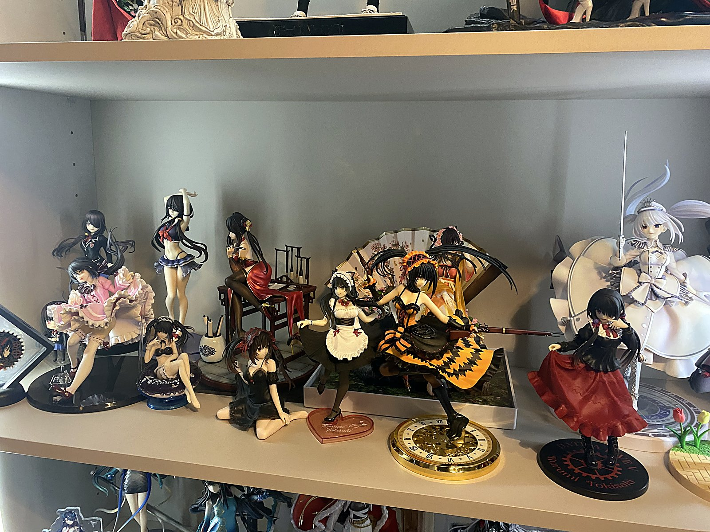
对的这边是我懒得一个个打代码了所以弄了一个综合一号展区（偷笑），全部是三三小规格手办或者景品
这里是天堂吗
对的这边依旧是我懒得一个个打代码了所以弄了一个综合二号展区（偷笑），二号展区展出的手办规格会稍微大一点，里面有一个手办被藏起来啦 不方便展示（
嘿嘿嘿嘿嘿
这边几乎收藏了狂三的每一期立牌，其实还有非常多的谷子但是没放在展示柜展示就是了，通常来说每一期立牌都会配上谷子，可能有几期我只买了期中一个 展示出来的立牌都是我觉得立绘非常之好看非常之美味的
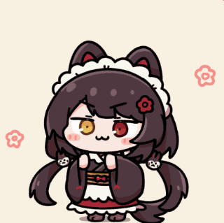
朴素而优雅
伟大无需多言
这款手办是25年发售的由手办大厂F:nex（官网在这）制作的，这款手办可以排进我最喜欢手办前五名， 29,700日元 （约1259rmb）的定价，达到了超出其价值表现效果，面部的雕刻绝不含糊，旗袍的颜料我特别喜欢，饱和度刚刚好，还有不可不尝的光腿环节。 每次提到这个手办我就会喷一次那些哄抬价格品控依托的手办厂商（说的就是你gsc），质量不如景品手办却卖着比景品高10倍的价格， 手办圈只有多一些像apex、F:NEX、Myethos这样认真抓质量不糊弄消费者的厂商才会发展的越来越好，才会有更多优秀的作品。
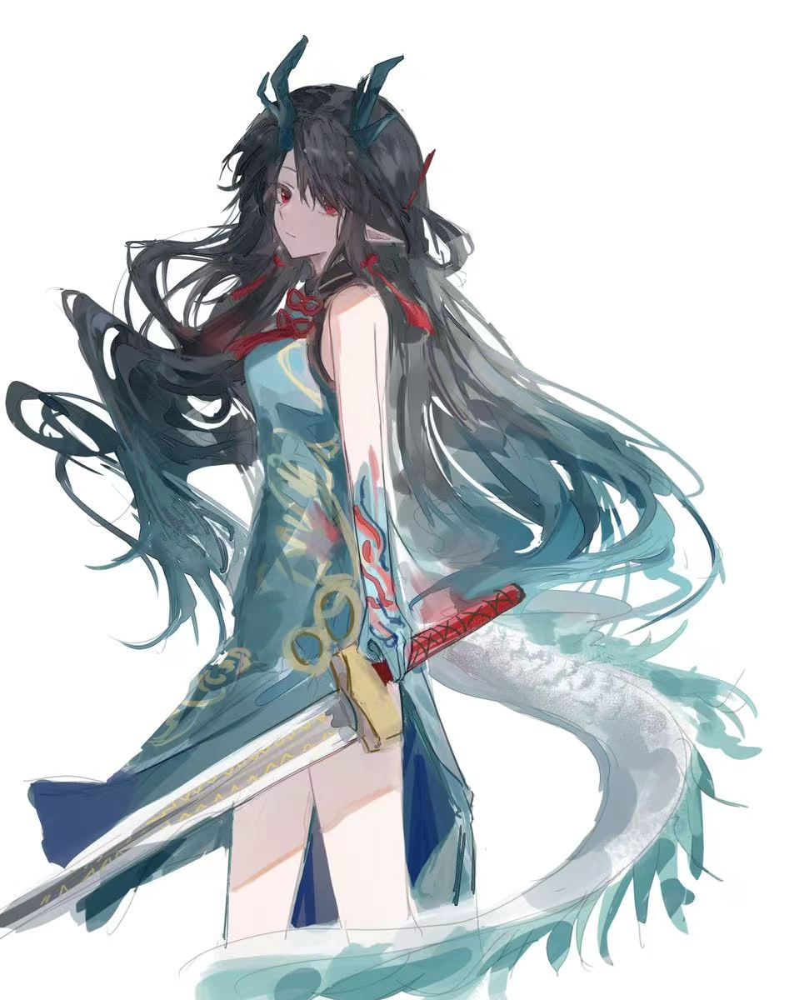
来自p站画师eternray. 跳转至作者主页
更多详情点这里：hpoi手办维基
“我们什么都保护不了。我们只能寄望于那个和谐的未来”
她们是女同事吗
原来你也玩（）
说来奇怪，其实我米游里面玩的最多的是原神和绝区零但是手办买的最多的是崩铁的，这个展区看上去就是前面一排崩铁角色后面一个胡桃 显得格格不入（
我的天哪170大人
我的天哪是六豆三蓄大人，是身高170（含耳朵）大人，是高耳姬大人，是蜜瓜享受者大人。当时绝区零刚刚发pv的时候就被雅小姐吸引了 本人对黑长直太刀大姐姐0抵抗力，真的很帅（王姐声线）。不过这个专区目前只有雅小姐的一些徽章立牌啥的，老米出的三个雅小姐手办目前都是只付了定金 希望快点补尾款，这样这个区域会热闹点。
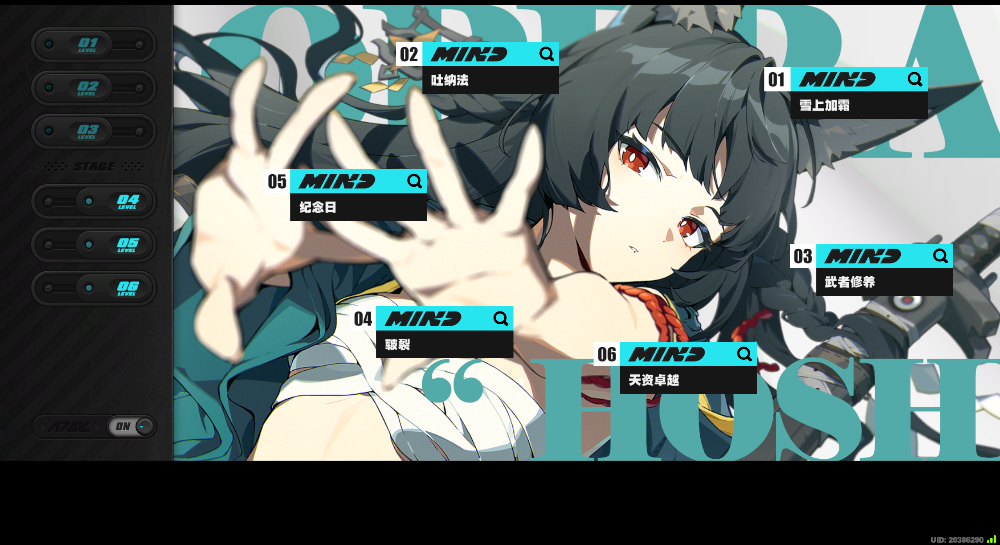
六命雅小姐享受者
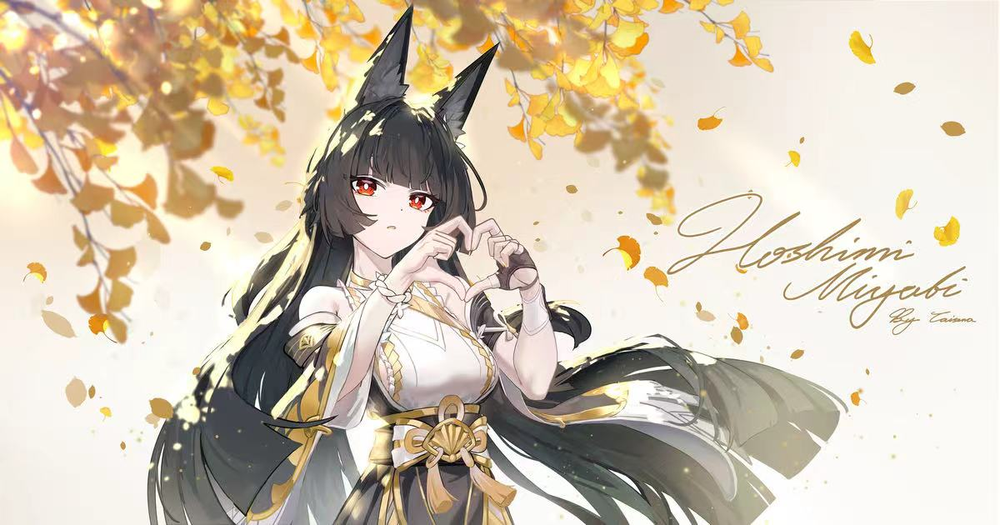
来自p站画师CAISENA 跳转至作者主页
我自认为布置最好的区域
这个区域主要包含了mygo和gbc两个乐队番的周边，mygo刚出是我中考刚考完的暑假，这个番激发了我看乐队番的兴趣 然后到了之前mujica的究极大暴雷我才看的少了。再往前推一点有看过k-on，云过京吹和lovelive ，总的来说不是什么乐队番老资历。这个区域不知道为何布置完我看着特舒服，就是感觉高饱和，元素多 所以是我认为最满意的一个区域。
点击这个前往快乐之地：点击此处
最强gk手办
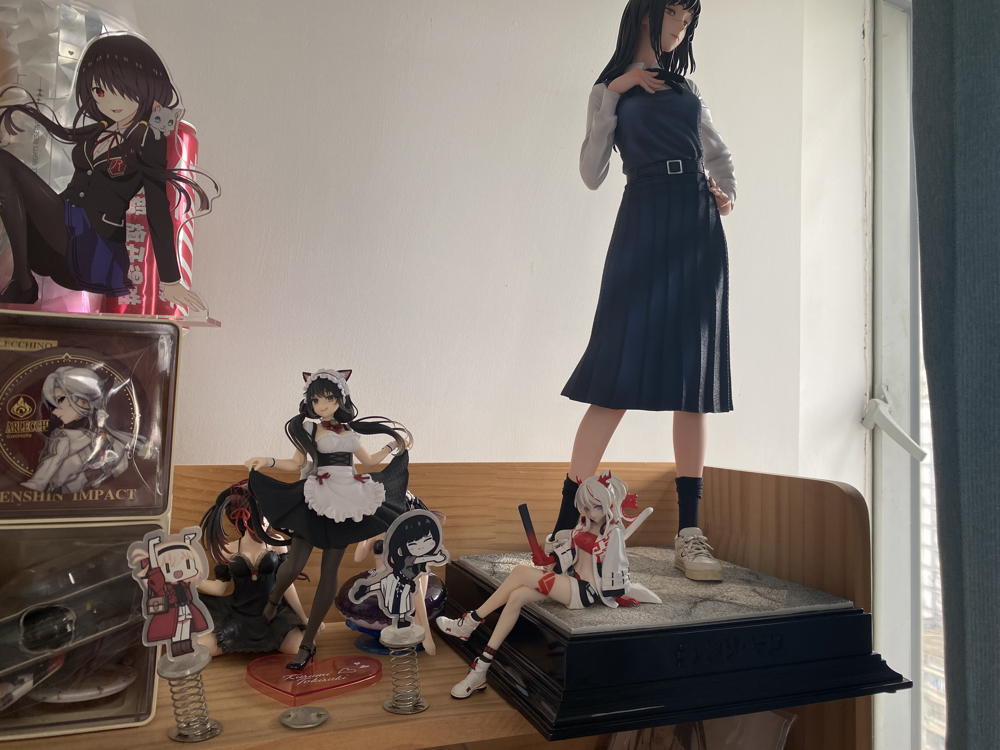
三鹰夜在展柜里的图我没来得及拍，所以用了之前还在高中时候拍的照片，后面会找机会补一张展柜照片。这款手办也是可以排进最喜欢手办前五名 作为gk手办它对面部的处理比很多量产手办要细致的多，由赫拉工作室制作，官方定价是三鹰夜或者三鹰朝单体2000左右，两只一起应该是3500上下，这边空间有限所以就买了三鹰夜的 。手办高约42cm（含底座），用的料子很足，能明显感觉到它的重量感。电锯人的漫画我两季都只是云一点点，然后tv版是追完了，蕾赛剧场版是高考前给看完了。 目前更新到哪里了也还没关注，上次看应该还是战争和黑锯打来打去那边。只能说第二季藤本树处理的完全不如第一季，现在在等tv的第二季出。
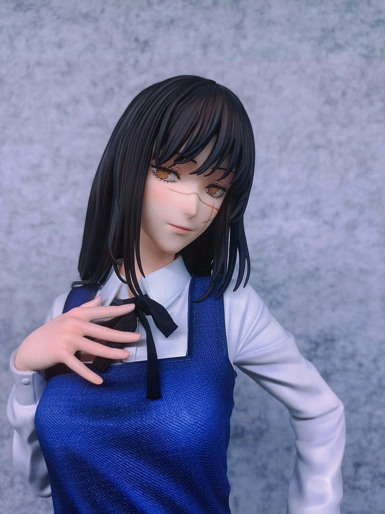
面部细节
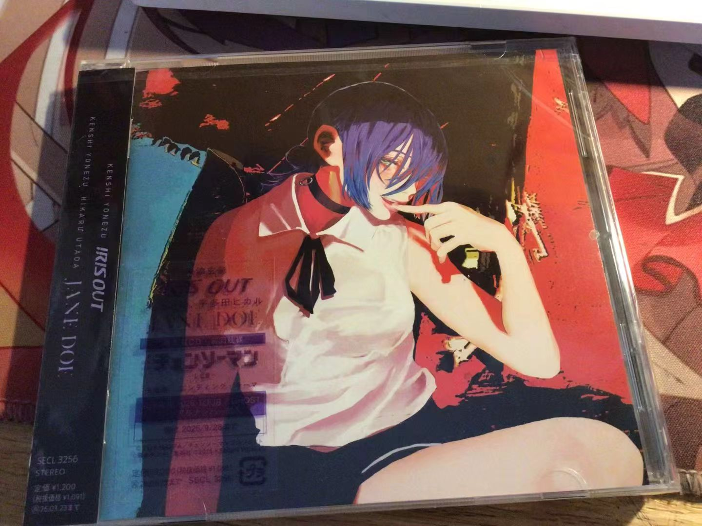
JaneDoe实体专辑
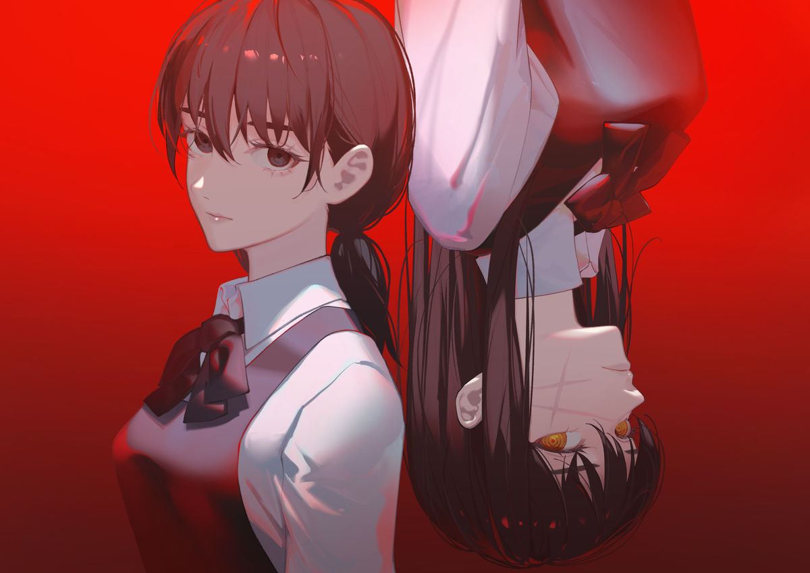
来自p站画师ピス 跳转至作者主页
冷眼萌是世间珍宝
腿控福音
身腿比例如何展现怪诞感
这款手办是全场最老的，第一版发售于2016年，我买的这个是再版的与第一版相比会更精细一点。手办由union creative（官网在这）制作， 高度20cm算小型手办，第一版定价15,120日元（约640rmb）再版的定价是18,150日元（约769rmb）。这款手办最大的特色就是修长的腿，设计师故意选择不太协调的身体腿部比例 来展现怪诞感，这个也很符合骸音整个主题的风格。这边可以展开来聊一下，骸音其实出的最多的是蟹形手办模型，那个超级帅也是骸音完全形态 ，有好几个版本（初音色、石灰诗绘美配色、镜音配色等）其中有几款限量版在闲鱼上价格高达3000rmb。这一类手办量很少加上骸音的热度在现在其实不是很高所以 这些手办都不太好买到，我也是因为渠道少加上价格昂贵没有买过蟹形，家里就这一个正常形态的（正常形态的还有一个初音版本可以在购物网站上找到）。
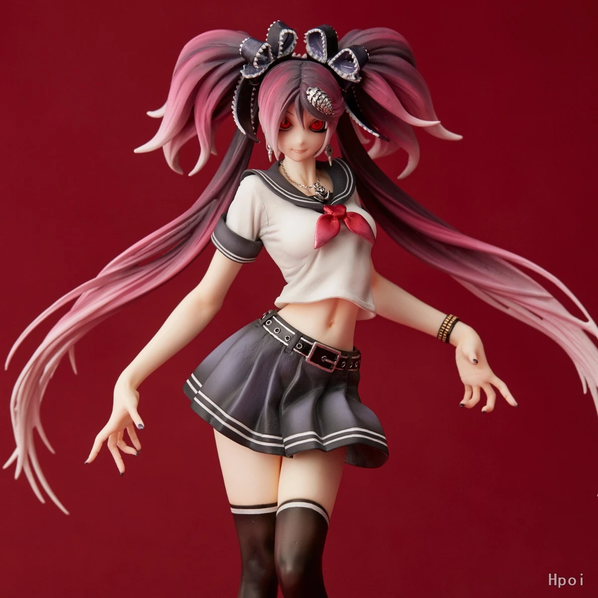
图片来自hpoi手办维基
想要了解骸音点这边（恐虫怕猎奇的慎入）：细菌污染（超级老的mv）
更多详情点这里：hpoi手办维基
白羽苏芳这个端庄
这是一件比较特别的藏品，这幅版画由innocent grey社长杉菜水姬（スギナミキ）老师绘制， 尺寸41cm*31.8cm，二级市场定价约10w日元（约5000rmb）。版画在flowers10周年画展上订购，限量83幅，内容是白羽苏芳长大时端庄阅读的模样。 杉菜水姬老师是画黑长直的高手，他最著名的作品是《花葬》，那幅画是相当之好看，可惜我没买到正版的只有仿品。flowers系列虽然我没有玩过，但是有玩过《壳之少女》，也是相当优秀的galgame，推荐游玩。
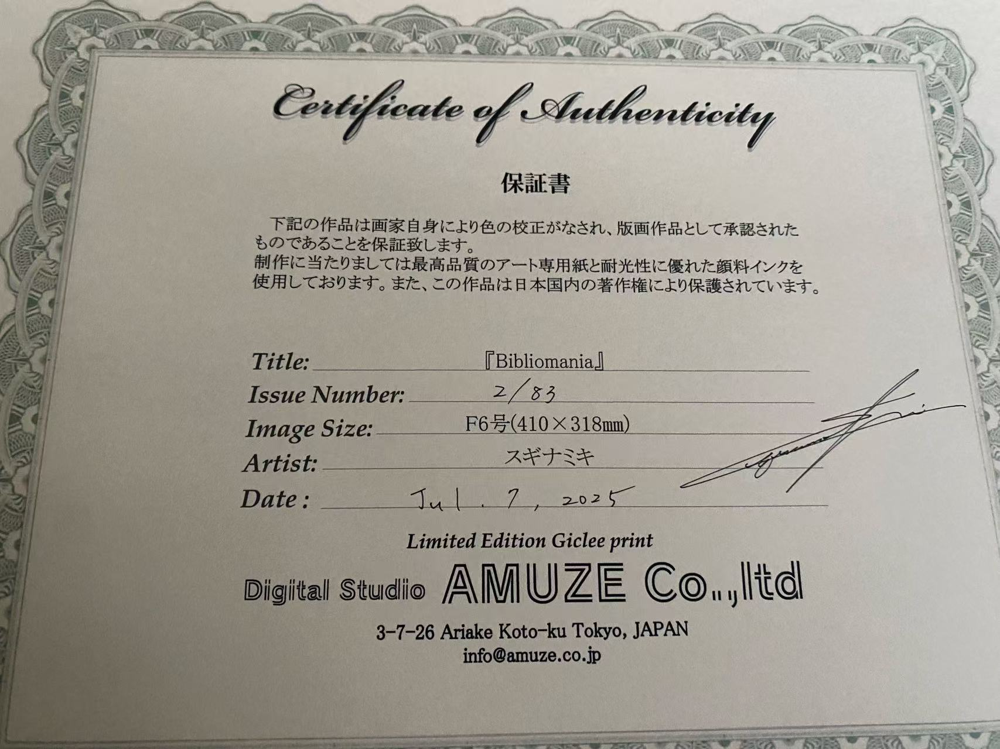
亲签证书
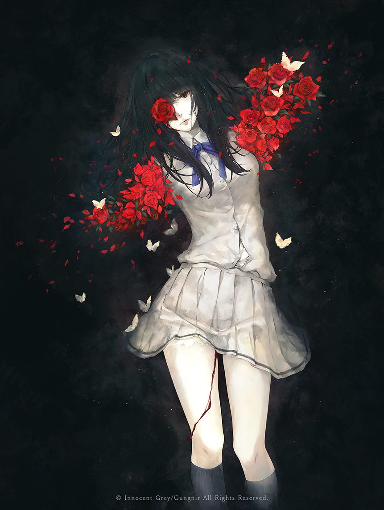
画作《花葬》
世界第一的公主殿下
这边没有太多需多需要介绍的，主要是初音未来各种景品手办的综合展览，初音未来出的手办非常之多，我只收集了一点点景品，欢迎初音厨晒出你的 收藏。
多ip混合
好几个ip混在一起的展区，好像是喜多川海梦和雅儿贝德的会多一点因为有一段时间蛮喜欢她们的手办的，也有凌波丽、满穗啥的
主播中考完的那个暑假买了人生中第一个狂三手办，从此一发不可收拾。收集手办的过程是幸福的，预售的手办就像是在做一笔投资，天天盼着补款就像在等待返利的那一天。 收集手办中最幸福的事情莫过于等待了一年的预售手办在一个平静闲暇的午后突然弹短信说要补款了，手里刚好有充足的资金，收到手办发现实物比官图好看。 老实说收藏手办确实是一个卡经济的爱好，但我一直觉得只要你喜欢二次元喜欢手办，即使买的景品手办也很好啊，就之前有一些优越狗觉得买手办比买景品的高贵， 如果连爱好都要拿来和消费力挂钩，这些优越狗现实中的生活是有多无趣。如果经济上确实限制了那买祖国版也没什么丢人的（不过这边要说一句祖国版的手办质量拿不准，稍微热一点的天气可能就会掉色什么的）。 从小到大我就喜欢收集东西，之前小学收藏笔记本，长大了玩二游收藏角色收藏武器，steam里收集游戏，手办的收藏更是这个爱好的具象化。 那种亲手打理手办，把她们一个个归类，一个个分区的心流体验是独一无二的，对每个人都是独特的。
作为不算那么老但略微有点资历的手办收藏爱好者，这边给圈外人想要入坑手办收藏一些建议以及说一些要注意的事情（满满干货）：
刚刚入坑时候不建议直接买预售手办，可以先买点便宜的现货手办试一下 ，如果说确实有特别喜欢的角色的手办在预售阶段，可以先等他转现货但是那个一般比较久估摸着也得有个一年了，比较急的话就看一下评论区这个厂商风评如何。 F：NEX、Apex（不是游戏那个apex）、Myethos（镜叔）、alter（大a）、FuRyu（妇幼）Taito（眼镜厂）这些都是品控相当可以本人有买过好几次的大厂子，其中FuRyu是做景品手办金字塔件的那一部分，而F:nex是FuRyu创办的一个专做高端手办的 厂子。apex和Myethos这两个厂主要做的是国内二游会多一点，经常逛米游铺或者买方舟手办的可能对这两个厂不陌生。
通常指的是三个手办界元老级的厂商：寿屋、gsc（良笑社）、alter。但是其实在现在我只有感觉alter还能算是御三家了，其他两家多多少少品控上比以前降低了一些 尤其是这个gsc，你就惦记着你那b粘土人吧，手办不好好做就捣鼓粘土人了。
上限很高下限很低的一类手办，在手办产业蓬勃发展的如今，gk手办不再小众，越来越多优秀的gk手办小作坊开始出现， gk手办通常价格会比量产型手办要贵，他能实现量产型手办无法实现的效果，用料也一般会更足一些。由于gk手办的管理没有非常严格所以里面也会有那种r18手办（
这个算我的研究范畴之外了，主要做一个区分，因为这类高达模型通常是那种要自己拼，零件很多的一类手办，他和我目前主要收藏的这一类以静态人物为主的手办模型都称作手办， 但其实两者受众还是有点区别。具体详情可以问一下身边的胶佬（
比较烧钱很占地方的一种手办，这里的等身一般有两种，第一种是等身雕像，像漫威的钢铁侠，dc小丑都有等身的手办，但是这类价格非常的昂贵至少是上万级别的 另一种就是阿宅喜欢的硅胶的定制的等身手办，这类手办价格通常在4000~1w不等,好的妆造好的衣服也可以让价格起飞。然后我不建议买等身手办是为了那一种用途， 现在大部分定制这个的商家都会提前问有没有那方面的用途，价格没什么区别，只是这一类等身手办很难洗，洗完也不好晾干，如果只是做展示的话就擦一下就可以了，加上这类手办内部是有做仿真骨骼的 通常都很脆弱，你也不忍心自己喜欢的角色磕了碰了然后整个骨折啥的吧。（想多了解等身手办的看这位b站up主的视频：点击跳转）
祖国版手办通常是指低价仿品，这一类手办通常可以比正版便宜个十倍，质量上就没法保证了，有的祖国版仿的挺像那么回事，有的就是制造混沌之物了。 当时一个10多块的祖国版雪乃真的震惊到我了，我十分好奇他是怎么盈利的。这一类祖国版手办价格都低的夸张，基本上一眼可以区分哪个是正版哪个是祖国版了。 得益于正规交易平台的管理，现在很难出现那种盗版手办挂正版价格的情况，大部分都是主动承认这就是祖国版的。
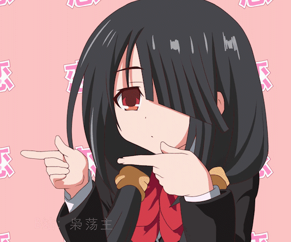
时崎狂三强大的时间系能力和她表面上坏坏的实际内心温柔的性格以及哥特风的立绘让那时的我瞬间沦陷了。我一向对这类城府比较深，大姐姐类型的角色没有抵抗力。
如果从个人的经历来说的话，我最失意的一段时间狂三陪在我身边，羁绊在挫折中得以加深，她像是我精神上的庇护所，可以在累的时候停下来喘口气。
说点中二的，狂三就是那个年少幼稚的我的象征，而我始终认为成长不意味着要和过去幼稚的自己切割，狂三代表的那个不坦率，不敢把想说的话说出来，不够自信的我一样也是我性格的一部分。
为什么如此深爱着狂三
几乎没有人能做到百分之百只关注现实的生活，人需要感性和理性有机结合才算是人格健全，而我是一个极其容易焦虑，想象力过度丰富的人，狂三的出现减轻了我的精神内耗，让我无处利用的想象力得以释放。狂三是我生命中一位重要的人，是那个幼稚的我存在的证明。
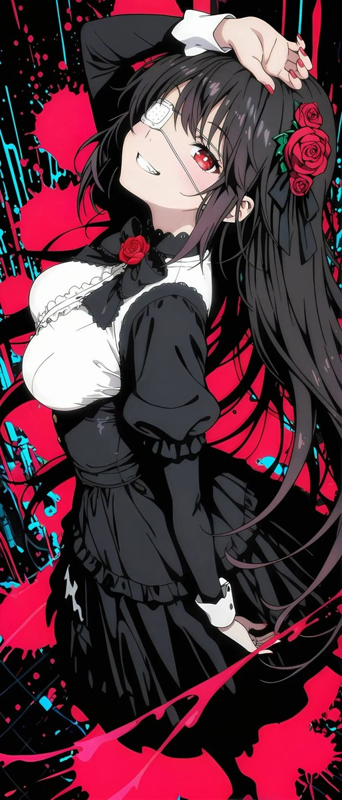
听歌范围非常的广泛